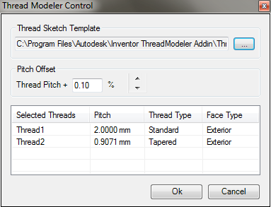
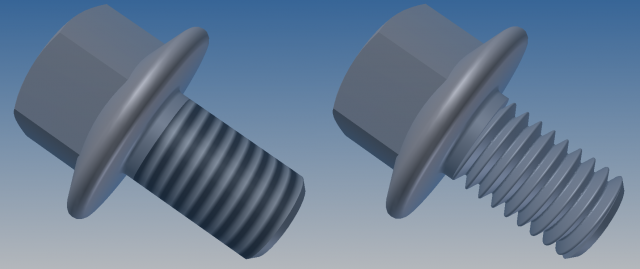

Inventor ThreadModeler
Thread Modeler automates the generation of modeled threads based on Inventor's thread feature.
Getting Started
To launch the plug-in, use the following command(s)
ThreadModeler
An additional panel containing the ThreadModeler command should be available in the Part Tools Tab of the Ribbon bar.
When you run the ThreadModeler command a new modeless form is displayed, allowing you to select the existing thread features you
want to convert into a fully fledged 3D model.
Usage
The ThreadModeler tool has been developed to allow Inventor users to generate a realistic modeled equivalent thread based on an existing Inventor thread feature.
Users are able to select an existing thread feature in the model, which the ThreadModeler then converts to a realistic 3D modeled thread based on the underlying thread feature properties.
Modeled threads are accurately generated saving a lot of time and effort for the user when compared with a manual approach, bringing a higher degree of realism to your models.
Screenshots
The ThreadModeler command in the Inventor RibbonBar

The ThreadModeler form that allows you to select the threads to be modeled.

Before and After: A threaded bolt illustrating the original thread feature as a bitmap, and the resulting modeled version.
Installation and Uninstallation
Use the provided installer msi to install/uninstall the application.
The application can also be uninstalled via the Windows Control Panel.
Additional Information
The source code for this app has been provided as a Visual Studio 2008 project containing C# code (not required to run the plugin).
Known Issues
The minimal thread pitch that the plug-in allows you to modelize is
0.0007 in (or
0.01778 mm).
Keep in mind that around this scale the quality of the modelization will look very poor in Inventor.
This plugin was written by Philippe Leefsma.
Philippe is a Developer Consultant at Autodesk, working as part of the Autodesk Developer Network program.
Support Information
Email us at
labs.plugins@autodesk.com with feedback or requests for
enhancements.
Version History
1.1.0
Fixed issue for handling small thread sizes.
Fixed issue concerning inverted right/left handed thread